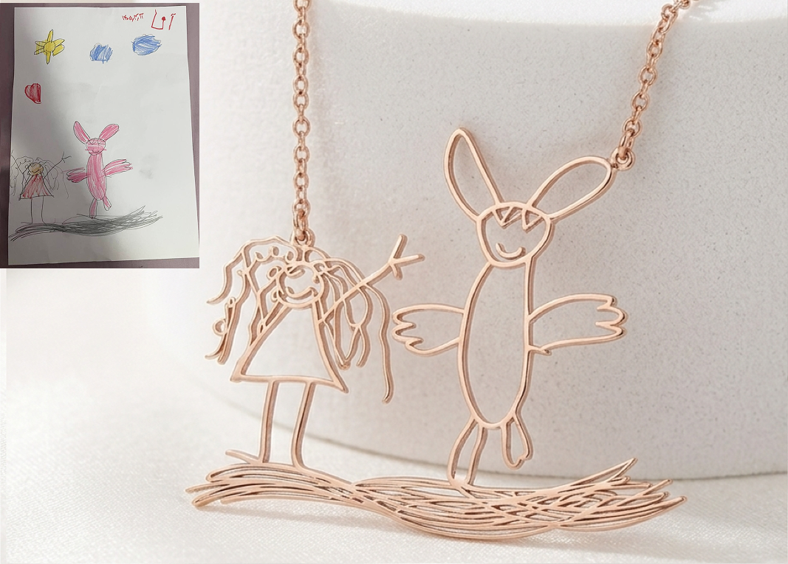

Bearla — Custom Heritage Keepsakes
Redesigning the custom keepsake experience to bridge the gap between abstract children's artwork and high-trust physical craftsmanship.

1. Empathize — Where This Actually Started
Golaab Jewelry is my own handmade jewelry brand, and in 2025 I started getting a specific kind of request through Instagram: turn a child's drawing into real, permanent jewelry. One order made the problem clear — a woman wanted a necklace from her niece's drawing of a bunny and a girl, and looking at the actual sketch, it's obvious the bunny is drawn bigger than the girl and the hair is just tangled loops, but none of that is obvious to a stranger holding the page for the first time; I had to decide what those marks meant and cast my read of them in silver, not hers.
That's the problem I kept hitting order after order — including with a neighbor who'd ordered from me before and nearly didn't go through with a piece for her niece's graduation because she had no way of knowing what the final piece would look like before committing, and only moved forward once I asked her directly what mattered most. My real process was always just to ask the customer what they saw and what the story was — it worked, but only because I did it by hand, one conversation at a time, with nothing recorded that a jeweler could check the piece against later.
Methodology Note: I didn't run a formal lab study to gather this research. Instead, I recruited participants simply by asking friends, family, and past Golaab Jewelry customers if they would look at early drawings and walk through the order idea with me. Because I didn't offer any incentives or payment, the feedback was informal and the sample size was small (just 6 people), which means it might not represent general e-commerce shoppers, but it helped me spot the immediate emotional barriers to buying custom keepsakes.

2. Define — The Real Problem
The gap isn't “customers don't trust artisans.” It's narrower than that: when someone else's drawing gets turned into a physical object, whoever's interpreting it is making calls that the person who actually loves that drawing never got to weigh in on. In 2025, that interpreter was just me, working off a photo, with no way for the customer to point at the page and say “this matters, this doesn't” before it was too late to change.
That's the actual problem the 2026 version, Bearla, is built to solve — not “reduce anxiety” as an abstract goal, but move the decision about what the drawing means from my eye to theirs.
Competitors
I looked directly at how two real Etsy sellers handle this same handoff — Caitlyn Minimalist and CoraJewelryCrafts. Both work the same way:
- Caitlyn Minimalist: Customer picks finish and length, adds to cart, and only after that do they separately send a photo of the drawing through a generic message thread or an email address.
- CoraJewelryCrafts: Same shape — choose finish/size, add to cart, and only after that do they separately send a photo of the drawing through a generic message thread or an email address.
The drawing itself is treated like an afterthought to the transaction, not part of it. Neither gives a customer any way to point at a specific part of the drawing and say why it matters. That gap — not camera quality, not upload speed — is the real thing Bearla is designed against.
3. Ideate — How Tap-to-Pin Actually Came About
Tap-to-Pin wasn't the result of comparing multiple structured directions on a whiteboard. It came directly out of talking to people about why they hesitated — both the strangers who tested the early version at the market and my neighbor, who almost didn't order at all until I asked her what mattered most in her drawing.
The pattern was the same every time: people weren't afraid of the process being slow. They were afraid that something meaningful to them would be lost in translation — read as a smudge, a mistake, or just decoration — with no way to say otherwise before it was too late. Tap-to-Pin is the direct answer to that: a way to let someone mark, in their own hand, which parts of a drawing matter and why, instead of leaving that entirely to my read of it.
Core 4-Step User Flow
I structured a simple 4-step flow that leads a customer from uploading a paper drawing to reviewing their final keepsake proof. This guides them through resolving details before making any payment:
Upload & Line Isolation
Uploading the sketch and automatically adjusting contrast to remove paper background shadows.
Tap-to-Pin Annotations
Tapping specific parts of the drawing to attach quick text notes explaining key details.
Material Selection
Choosing metal materials (like Gold or Silver) and previewing the finish style.
Reviewing the Proof
Reviewing the final proof layout and notes summary before checking out.
Sitemap
The high-level platform layout establishes a direct path from the homepage to the customization workspace.

4. High-Fidelity Prototype
I built an interactive prototype in Figma to verify how layout shifts work across mobile and desktop sizes:
- Mobile Touch Targets: All buttons and interactive elements are sized at least 48px to make them easy to tap on smaller screens.
- Desktop Split Panel: On larger screens, the viewport splits to show the preview panel and note workspace side-by-side.
5. System Logic: Powering the Intent Canvas
Building a mobile-first annotation tool required clear interface constraints to prevent mistakes and make sure drawings are manufactured accurately:
-
Image Cropping Boundaries
To make sure coordinates function accurately, the interface forces the user to crop and isolate a single drawing from the page immediately after uploading it. This stops notes from being placed on background shadows or nearby drawings. -
Mobile Touch Target Sizes
Annotating a drawing is simple on desktop, but difficult on small screens. I set a minimum 48px touch target size for dropping pins, and used a slide-up panel for text entry so the phone's keyboard doesn't cover the drawing while typing. -
Linking Notes to Manufacturing Data
The custom notes aren't just display text; the system saves each pin's coordinates directly with the cropped drawing file. This data is carried through the cart and checkout stages, so the bench jeweler sees exactly where the customer added instructions.
6. Design System & Brand Foundations
Heirloom keepsakes cast from a child's drawing. A warm, editorial, jewelry-box aesthetic — cream & maroon, serif elegance, restrained gold detail.
Color
7. Usability Validation & Iteration
Methodology: I built the initial 3-step version as a live, working site and tested it in person with roughly 10 to 12 real strangers at Carya Market in Calgary — actual potential customers approached in the real world.
V1: The 3-Step Flow

First try: A simple flow where users upload a photo, choose the metal type, and pay.
I first tried a fast 3-step checkout: uploading a photo, choosing a material, and checking out. I assumed that fewer steps would mean less friction and a faster path to purchase.
People hesitated right at the photo step. They weren't sure what counted as a good enough photo, and more specifically, they were afraid something that mattered to them would just look like a smudge or a mistake once I had it.
That fear showed up again separately with a neighbor of mine, an existing customer, who wanted a piece made for her niece's graduation. She hesitated and asked a lot of questions — not about price, but because she had no way of knowing what the final piece would actually look like before committing to a non-refundable order. She only moved forward once I asked her directly what mattered most and what she wanted the piece to convey.
V2: The 4-Step Intent Flow

Second try: Adding the Tap-to-Pin annotation step to resolve ambiguity before paying.
Based on what I observed, I changed the design by adding the Tap-to-Pin annotation step. Customers pin specific notes directly onto their drawing, converting a manual conversation into a clear step in the checkout flow. It's the same thing I was already doing by hand on real Golaab orders, turned into an actual step in the flow instead of something that only happened if I remembered to ask.
Adding a step increased the interaction effort, but it removed the psychological worry that kept people from ordering. Letting customers explain their sketch in their own words built enough confidence to complete the order.
8. Inclusive Layout Hierarchy & Strategic Takeaways
Inclusive Layout & Accessibility
- Contrast & Legibility: Maintained strict WCAG AA contrast on warm neutral backgrounds, ensuring legibility for older demographics (e.g., grandparents purchasing gifts).
- Screen-Reader Hierarchy: Structured semantic heading levels (H1, H2, H3) and alt-text descriptions for interactive transformation previews.
Strategic Product Takeaways
- Trust Precedes Conversion: For highly custom, emotional products, showing the transformation process before forcing account creation or checkout is essential for driving conversions.
- Responsive Cohesion: Designing modular grid components made it seamless to scale rich brand storytelling from desktop down to mobile viewports without sacrificing performance or clarity.